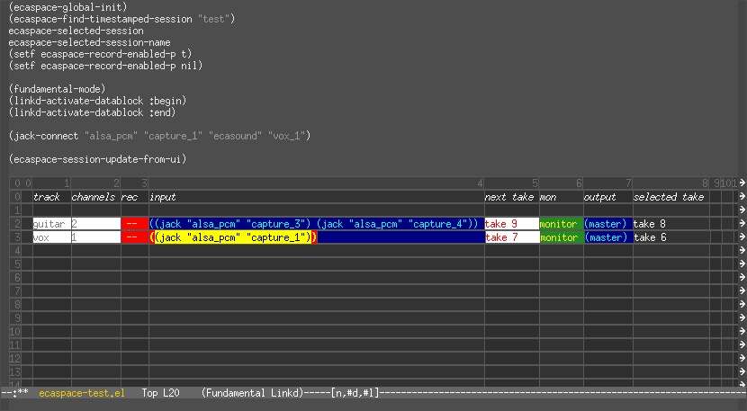

ecaspace
About
ecaspace is a music creation tool built on Ecasound and GNU Emacs.
2007-01-25: It is currently in pre-alpha but there is working code. You can download ecaspace.el. Ecaspace depends on libraries that are changing fast right now, so please wait a few days before doing anything with it.
Until then, look at the screenshot:

Design
An ecaspace is a library of sound projects and recordings. A session is a set of tracks. A track consists of an ecasound input, a corresponding output, a set of operations to be performed, and finally a collection of takes. A take identifies an individual audio file. A take set is the set of new takes created when the engine is started with record-enabled tracks.
Inspiration
I recently decided to stop using Ardour. I have no use for punch-in/punch out, really complex automations, or sequencing of loops. Our band's style is about capturing the music as it happens, and throwing away whole takes if it doesn't work.
I want to easily mix command-line batch processing tools (like "soundmosaic") with automated multitrack processing… I have become interested in the dialogue between live improvisation and "process music" (i.e. two ends of a spectrum)
Playing with ecasound's Emacs Lisp interface has made me decide to develop some Lisp tools for automating my workflow and for creating new possibilities by integration with other tools (Snd, Common Lisp Music, soundmosaic, etc)
Sketch of album process
When you're in between songs, it should feel like you're in between radio stations the way it happens when you move the dial around on an old radio. There should be a bit of static and maybe you hear a third song in there somewhere.
ecaradio is an ecaspace module for assembling music on this model.
TODO Complete alpha
TODO Buy "notes from the metalevel"
TODO Buy "microsound"
TODO Fix too much space after activated block
TODO Make hooks work so that blocks are properly saved
TODO Session save/load commands, auto-managing the .ecaspace files
TODO Create session from templates
TODO Ecaspace minor mode gives you a keymap with record/play/stop
TODO Allow file input for tracks in :import mode
TODO Notion of track "modes" like :normal and :import?
TODO Widgets for global record-enable, play, stop
TODO General chain ops
TODO General controllers
TODO Pool inputs
Ecaradio tasks
TODO Compress static
TODO Add morphing?
TODO assemble album v18
TODO write UI for this functionality
Links
- my hardware setup: http://dto.freeshell.org/notebook/KarmaPod.html
- some audio ramblings: http://dto.freeshell.org/notebook/ClFrame.html
- some music we made: http://dto.freeshell.org/notebook/Excelsis.html